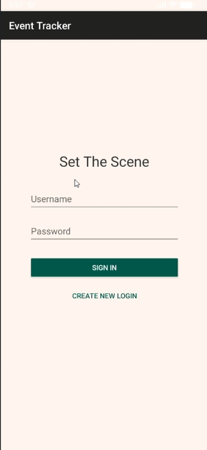
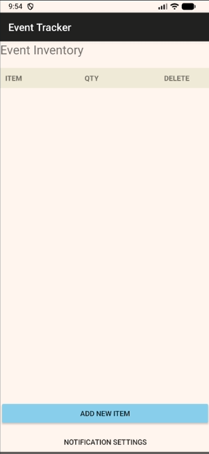

Professional Self-Assessment
Welcome to my professional ePortfolio. My journey through the Bachelor of Science in Computer Science program at Southern New Hampshire University, with a concentration in Software Engineering, has been profoundly transformative. As I approach my graduation, this portfolio serves as a culmination of the rigorous technical capabilities I have developed and the unique professional perspective I bring to the tech industry. For nearly a decade, I have built my career in the dental field, advancing to the role of Clinical Floor Manager. Managing complex clinical operations has ingrained in me a deep appreciation for systems efficiency, precise communication, and problem-solving in fast-paced environments. As I transition into software engineering, I have found that this background gives me a distinct advantage. I understand how to collaborate effectively within cross-functional teams and translate complex operational needs into clear, actionable goals for stakeholders. Whether coordinating patient care or developing an application, the core objective remains the same: designing robust solutions that prioritize the end-user's needs. Throughout my coursework, I have established a comprehensive technical foundation. I have learned to implement efficient data structures and algorithms to optimize performance, design scalable databases to manage complex information, and apply rigorous software engineering methodologies to build reliable applications. Furthermore, developing a proactive security mindset has been central to my education, ensuring that I anticipate adversarial vulnerabilities and prioritize data protection in every architectural decision. The artifacts presented below showcase the practical application of these skills. You will find an initial code review demonstrating my ability to analyze and critique legacy code, followed by three distinct technical enhancements. Together, these projects illustrate my tangible growth across software design, algorithmic efficiency, and database integration. They represent not just my technical proficiency, but my commitment to continuous improvement and my readiness to deliver value as a software engineer.
Code Review
Artifact Green Pace Secure Developement Architecture
Description: The Green Pace artifact is a comprehensive secure development policy and architectural framework originally created for CS-405 Secure Coding[cite: 1]. It establishes a defense-in-depth strategy, formalizing security standards to ensure C/C++ code remains resilient against vulnerabilities such as memory corruption and injection attacks[cite: 1].
Justification & Reflection: I selected this artifact because it showcases my ability to integrate rigorous security principles directly into the software development life cycle, moving beyond simply writing code to architecting how code is safely built and deployed. For this enhancement, I expanded the architectural design to incorporate a fully automated "shift-left" DevSecOps pipeline[cite: 1]. This involved mapping out the integration of automated Static Application Security Testing (SAST) tools—such as SonarQube, Cppcheck, and Checkmarx—into the Design and Build phases to block code that violates the 10 core secure coding standards before it reaches testing[cite: 1].
During the enhancement process, I deepened my understanding of balancing developer velocity with necessary security friction. I also integrated formalized encryption policies and Triple-A (Authentication, Authorization, Accounting) protocols to enforce the Principle of Least Privilege across the system architecture[cite: 1]. This project successfully demonstrates my mastery of course outcomes related to designing innovative computing solutions, employing industry-standard CI/CD tools, and developing a security mindset that actively mitigates software design flaws to protect data.
Watch Code Review VideoSoftware Design and Engineering
Artifact: "Set the Scene" Event Tracker Application


Description: The "Set the Scene" application is a custom mobile event tracker that I originally developed as part of my foundational software engineering coursework. It is designed to help event planners organize their jobs, manage client details, and track dynamic schedules. The application streamlines professional workflows through a secure, intuitive interface and features a modular design to ensure stable performance. Its core functionality includes a secure user authentication system, a comprehensive database shell supporting CRUD operations for event data, and integrated SMS notification capabilities to keep users updated on event triggers.
Justification & Reflection: I selected this artifact because it serves as a comprehensive showcase of my ability to build functional, user-centric software from the ground up. By managing multiple distinct activities—from data persistence to external SMS APIs—it demonstrates my competency in architecting complex systems. For this capstone enhancement, I focused on modernizing the software design by [Insert what you changed here, e.g., refactoring the modular structure to improve maintainability, updating the UI layout for better user experience, or optimizing the API calls].
During the enhancement process, I learned how to critically evaluate my own legacy code, identifying early structural decisions that needed to be reworked for better scalability. This project proves my mastery of course outcomes related to designing innovative computing solutions, employing industry-standard development practices, and delivering technically sound visual and written communications tailored to end-users.
View Enhanced CodeAlgorithms and Data Structures
Artifact: Travlr Getaways - Data Routing & Controllers

Description: The Travlr Getaways project is a full-stack web application utilizing an MVC (Model-View-Controller) architecture built with Express.js. The artifact highlighted here focuses on the application's backend logic, specifically the routing algorithms and controller functions used to manage and serve data to the frontend Handlebars (.hbs) views.
Justification & Reflection: I selected this artifact to demonstrate my ability to manage complex data structures and optimize data flow within a full-stack environment. For this enhancement, I focused on the controllers and routes modules to improve how the application handles dynamic data sets. Instead of relying on static frontend code, I implemented logic within files like travel.js to efficiently retrieve, parse, and structure JSON payload data before passing it to the dynamic views.
Throughout this enhancement, I learned how crucial efficient data handling is to application performance. By separating the logic into dedicated controllers, I ensured that the algorithms parsing the trip data run cleanly without cluttering the UI code. This project successfully demonstrates my ability to design computing solutions using appropriate algorithmic principles, ensuring scalable data management across different layers of an application stack.
View Enhanced CodeDatabases
Artifact: Travlr Getaways - MongoDB Integration
Description: The database component of the Travlr Getaways application utilizes MongoDB, a NoSQL document database, to securely store and manage the application's core data. Rather than relying on hardcoded JSON files, this integration allows the application to persist dynamic data related to travel destinations, room details, and user credentials across server restarts.
Justification & Reflection: I included this artifact to showcase my proficiency in full-stack development, specifically my ability to connect a backend server to a robust database structure. For this enhancement, I designed data models (schemas) using Mongoose to enforce structural rules on the incoming data. I then built out a RESTful API within the Express framework, allowing the admin dashboard to execute complete CRUD (Create, Read, Update, Delete) operations directly against the MongoDB database.
While enhancing this artifact, I gained valuable experience managing asynchronous database calls and troubleshooting connection protocols. Securing the database endpoints and ensuring seamless data retrieval proved challenging but ultimately solidified my understanding of secure data pipelines. This project successfully demonstrates my mastery of course outcomes related to implementing innovative computing practices and utilizing industry-standard tools to deliver functional, data-driven software solutions.
View Enhanced Code